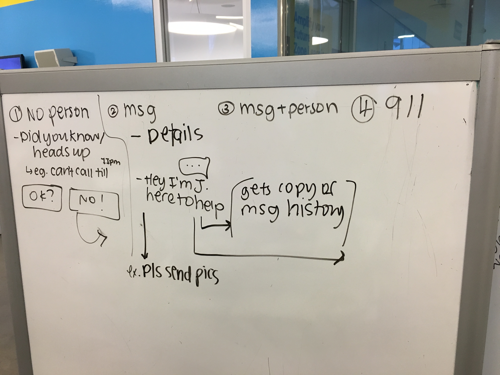

Blue Hat
Hackathon - Hack Toronto Police Services (June 2018)
HackTPS is was a three-day hackathon, hosted by Toronto Police Services (TPS) , in collaboration with the City of Toronto, Equitech, and the Ryerson DMZ. We were challenged to use ground breaking technologies to enhance real-time data and information to empower the community and build solutions for persistent safety issues.
Our team began by analyzing the core problems that the TPS currently face. We came across one common theme: 911 receives a significant volume of requests each day. We identified the core problems as
- The TPS experience a daily number of 70 to 80 calls a day, which are not high priority calls.
- Police have to deal with situations they shouldn’t have to deal with or aren’t priorities.
- Too many people calling 911 means emergencies get put on hold.

Our team delegated tasks and continued iterating on the designs while beginning development. The design process started with pen and paper, progressed to wireframes, then concluded with high fidelity prototypes that were later translated into code. The final prototype in Invision can be viewed here.


The app was built with React Native in the front-end and Firebase in the backend. Overall, this was an extremely valuable learning experience where I was able to work on all aspects of the design and development process. The completed project can be viewed here.